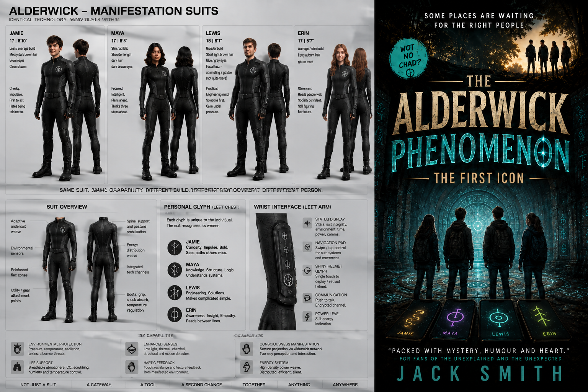

Young Adult fiction
The Alderwick Phenomenon
A British science-fiction mystery series about four sixth-formers, a hidden entrance in Alderwick Woods and a technology that should not exist.

In development
A mystery built to unfold over a series.
Jamie, Maya, Lewis and Erin discover an impossible hidden system beneath Alderwick Woods — and learn that their roles in it may have started long before they arrived.
✓
British setting
Grounded in sixth-form life, local woods and a mystery that expands far beyond Alderwick.
Grounded in sixth-form life, local woods and a mystery that expands far beyond Alderwick.
✓
Four distinct roles
Investigator, healer, fixer and negotiator — each useful for different reasons.
Investigator, healer, fixer and negotiator — each useful for different reasons.
✓
Technology and discovery
Glyphs, hidden systems, survival problems and strange worlds without turning the story into a military thriller.
Glyphs, hidden systems, survival problems and strange worlds without turning the story into a military thriller.